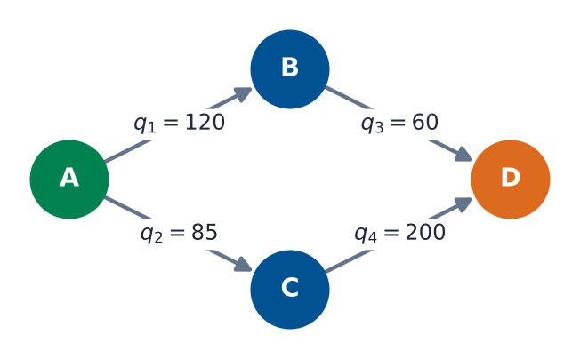
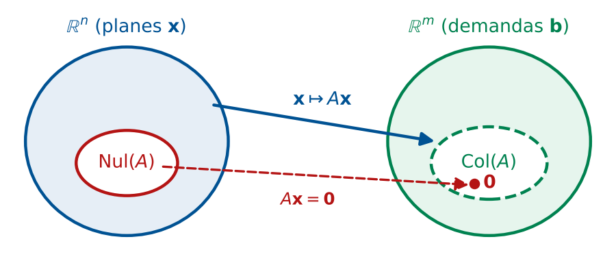
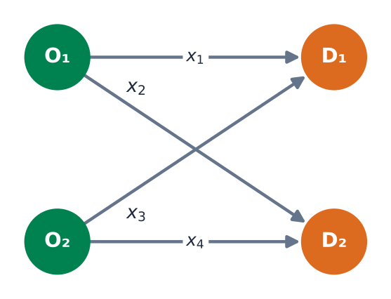
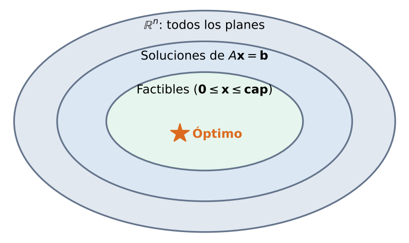
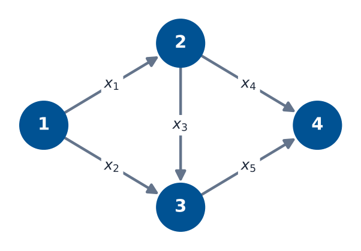

Espacios Vectoriales y Subespacios
Matemáticas 2 — Módulo 4, Clase 18
Cátedra de Matemáticas 2
Ingeniería en Logística
Clase 18
Contenidos
- Objetivos de Aprendizaje
- Por qué importa en Logística
- Vectores en \(\mathbb{R}^n\): Representación Logística
- Espacio Vectorial: Definición y Axiomas
- Subespacios: Definición y Verificación
- Espacio Nulo \(\text{Nul}(A)\) y Espacio Columna \(\text{Col}(A)\)
- Aplicación Logística: Restricciones como Subespacios
- MATLAB: null(), orth(), rank()
- Ejercicios Prácticos
- Resumen y Tarea
Objetivos de Aprendizaje
Al finalizar esta clase el estudiante será capaz de:
- Reconocer qué es un espacio vectorial y verificar sus axiomas.
- Identificar subespacios y verificar las 3 condiciones.
- Calcular \(\text{Nul}(A)\) y \(\text{Col}(A)\) e interpretarlos.
- Relacionar restricciones logísticas con subespacios.
- Aplicar
null(), orth(), rank() en MATLAB.
- Decidir qué restricciones agregar y justificar el tradeoff.
Conexión con Clase 17
Clase 17: combinación lineal e independencia.
Clase 18: ¿dónde viven esas combinaciones \(\to\) espacios vectoriales.
¿Por qué importa en Logística?
Situación real
Una empresa de distribución opera con restricciones:
- Capacidad máxima de camiones
- Balance de inventario (entrada = salida)
- Restricciones de peso y volumen
- Regulaciones de rutas
El conjunto de todos los planes válidos forma un subespacio del espacio de todos los planes posibles.
Intuición clave
Cada plan de distribución válido es un vector.
Entender la estructura del conjunto de planes nos permite optimizar y agregar restricciones de forma sistemática.
Vectores en \(\mathbb{R}^n\): Representación Logística
Un vector \(\mathbf{x}\in\mathbb{R}^n\) representa \(n\) variables simultáneas:
\[ \mathbf{q}=\begin{pmatrix}120\\85\\60\\200\end{pmatrix} \leftarrow \begin{array}{l} \text{Ruta A-B}\\ \text{Ruta A-C}\\ \text{Ruta B-D}\\ \text{Ruta C-D} \end{array} \]
(toneladas enviadas por ruta)
Cada plan de distribución es un punto en \(\mathbb{R}^4\).
¿Cuáles de esos puntos son factibles?

Red de distribución: cada arco es una componente del vector \(\mathbf{q}\in\mathbb{R}^4\)
Espacio Vectorial: Definición y Axiomas
Definición
Un espacio vectorial \(V\) es un conjunto con suma y multiplicación escalar que satisfacen 10 axiomas.
Axiomas de la suma (A1–A5)
- \(\mathbf{u}+\mathbf{v}=\mathbf{v}+\mathbf{u}\)
- \((\mathbf{u}+\mathbf{v})+\mathbf{w}=\mathbf{u}+(\mathbf{v}+\mathbf{w})\)
- Existe \(\mathbf{0}\): \(\mathbf{u}+\mathbf{0}=\mathbf{u}\)
- Existe \(-\mathbf{u}\): \(\mathbf{u}+(-\mathbf{u})=\mathbf{0}\)
- \(\mathbf{u}+\mathbf{v}\in V\) (clausura)
Axiomas escalares (A6–A10)
- \(c\mathbf{u}\in V\) (clausura)
- \(c(\mathbf{u}+\mathbf{v})=c\mathbf{u}+c\mathbf{v}\)
- \((c+d)\mathbf{u}=c\mathbf{u}+d\mathbf{u}\)
- \(c(d\mathbf{u})=(cd)\mathbf{u}\)
- \(1\cdot\mathbf{u}=\mathbf{u}\)
El espacio de referencia
\(\mathbb{R}^n\) con suma y producto escalar habituales satisface los 10 axiomas.
Es el espacio vectorial del curso.
¿Para qué sirven los Axiomas?
Consistencia algebraica
Los axiomas garantizan:
- Puedo sumar planes y obtener otro plan válido matemáticamente.
- Existe un plan nulo (\(\mathbf{0}\)): no enviar nada.
- Existe un plan inverso: "deshacer" envíos.
Advertencia logística:
En la práctica, los envíos son \(\geq 0\). Eso no es un espacio vectorial (falla A4).
Entonces ¿para qué?
- Modelamos variaciones respecto a un plan base.
- Los desvíos (positivos y negativos) sí forman un espacio vectorial.
- Nos permite analizar flexibilidad y restricciones.
Subespacios: Definición
Definición (Subespacio)
Un subconjunto \(H\subseteq V\) es
subespacio vectorial si:
- S1: \(\mathbf{0}\in H\)
- S2: Si \(\mathbf{u},\mathbf{v}\in H\), entonces \(\mathbf{u}+\mathbf{v}\in H\)
- S3: Si \(\mathbf{u}\in H\) y \(c\in\mathbb{R}\), entonces \(c\mathbf{u}\in H\)
Ejemplo: plano en \(\mathbb{R}^3\)
\[ H=\left\{\begin{pmatrix}x\\y\\0\end{pmatrix}:x,y\in\mathbb{R}\right\} \]
S1: \((0,0,0)^T\in H\) ✓
S2: \((x_1+x_2,y_1+y_2,0)^T\in H\) ✓
S3: \((cx,cy,0)^T\in H\) ✓
NO es subespacio
\[ P=\left\{\begin{pmatrix}x\\y\\1\end{pmatrix}:x,y\in\mathbb{R}\right\} \]
S1 falla: \((0,0,0)^T\notin P\) ✗
Todo subespacio debe pasar por el origen.
Verificación Paso a Paso
Ejercicio: ¿Es \(H=\{\mathbf{x}\in\mathbb{R}^3:x_1+2x_2-x_3=0\}\) un subespacio?
S1 — Vector cero:
\[ 0+2(0)-0=0 \quad\checkmark \]
S2 — Clausura bajo suma:
Sean \(\mathbf{u},\mathbf{v}\in H\), es decir \(u_1+2u_2-u_3=0\) y \(v_1+2v_2-v_3=0\):
\[ (u_1+v_1)+2(u_2+v_2)-(u_3+v_3)=(u_1+2u_2-u_3)+(v_1+2v_2-v_3)=0 \quad\checkmark \]
S3 — Clausura escalar:
\(c(u_1+2u_2-u_3)=c\cdot 0=0\) ✓
Conclusión
\(H\) es un subespacio de \(\mathbb{R}^3\).
Geométricamente es un plano que pasa por el origen.
Tipos de Subespacios en \(\mathbb{R}^n\)
Subespacios básicos
- \(\{\mathbf{0}\}\): subespacio trivial
- Recta por el origen
- Plano por el origen
- Todo \(\mathbb{R}^n\)
Subespacios de una matriz \(A\)
- \(\text{Nul}(A)=\{\mathbf{x}:A\mathbf{x}=\mathbf{0}\}\subseteq\mathbb{R}^n\)
- \(\text{Col}(A)=\{A\mathbf{x}:\mathbf{x}\in\mathbb{R}^n\}\subseteq\mathbb{R}^m\)
- Espacio fila de \(A\)
Todo subespacio pasa por \(\mathbf{0}\).
Espacio Nulo: \(\text{Nul}(A)\)
Definición
\[ \text{Nul}(A)=\{\mathbf{x}\in\mathbb{R}^n:A\mathbf{x}=\mathbf{0}\} \]
Es un subespacio de \(\mathbb{R}^n\).
Conexión logística: si \(A\) representa restricciones de balance de flujo, entonces \(\text{Nul}(A)\) = conjunto de flujos que no desequilibran la red.
Ejemplo
\(A=\begin{pmatrix}1&2&-1\\2&4&-2\end{pmatrix} \xrightarrow{\text{rref}} x_1+2x_2-x_3=0\)
Variables libres \(x_2=s\), \(x_3=t\):
\[ \mathbf{x}=s\begin{pmatrix}-2\\1\\0\end{pmatrix}+t\begin{pmatrix}1\\0\\1\end{pmatrix}, \quad s,t\in\mathbb{R} \]
\(\text{Nul}(A)\) es un plano en \(\mathbb{R}^3\). Nulidad = 2.
Espacio Columna: \(\text{Col}(A)\)
Definición
\[ \text{Col}(A)=\text{Gen}\{\mathbf{a}_1,\mathbf{a}_2,\ldots,\mathbf{a}_n\}\subseteq\mathbb{R}^m \]
Es un subespacio de \(\mathbb{R}^m\).
Interpretación: \(\text{Col}(A)\) = conjunto de todos los \(\mathbf{b}\) para los que \(A\mathbf{x}=\mathbf{b}\) tiene solución.
En logística: demandas alcanzables dadas las capacidades del sistema.
Regla de consistencia
\(A\mathbf{x}=\mathbf{b}\) tiene solución si y solo si \(\mathbf{b}\in\text{Col}(A)\).
Si la demanda \(\mathbf{b}\) no está en \(\text{Col}(A)\), el sistema no puede atenderla.
Teorema Rango-Nulidad
\[ \text{rango}(A)+\text{nulidad}(A)=n \]
Rango = \(\dim(\text{Col}(A))\). Nulidad = \(\dim(\text{Nul}(A))\) = grados de libertad.
Imagen de los Subespacios

Nul\((A)\subseteq\mathbb{R}^n\) se envía a \(\mathbf{0}\); Col\((A)\subseteq\mathbb{R}^m\) son las demandas alcanzables
| Subespacio | Contenido en | Dimensión | Relación con \(A\) |
|---|
| \(\text{Nul}(A)\) | \(\mathbb{R}^n\) | \(n-r\) | soluciones de \(A\mathbf{x}=\mathbf{0}\) |
| \(\text{Col}(A)\) | \(\mathbb{R}^m\) | \(r\) | combinaciones de columnas |
| \(r=\text{rango}(A)\) |
Caso: Restricciones como Subespacios
Red bipartita 2×2
\[ A=\begin{pmatrix}1&1&0&0\\0&0&1&1\\-1&0&-1&0\\0&-1&0&-1\end{pmatrix} \]
Filas = nodos. Columnas = arcos \(x_1,x_2,x_3,x_4\).
Cálculo
- \(\text{rango}(A)=3\)
- \(\text{nulidad}=4-3=1\)
- 1 grado de libertad en flujos

Red bipartita 2×2: orígenes O₁, O₂ y destinos D₁, D₂
Restricción adicional (\(x_3=0\)):
aumenta el rango \(\to\) reduce la nulidad a 0 \(\to\) solución única.
Interpretación: Restricciones Reducen el Subespacio

Cada restricción adicional reduce el conjunto de planes posibles
Idea central
Cada restricción lineal homogénea define un subespacio.
La intersección de subespacios es un subespacio.
Más restricciones \(\Rightarrow\) subespacio más pequeño \(\Rightarrow\) menos flexibilidad.
Ejemplo Numérico: Solución General
Red con 3 rutas, 2 restricciones de balance:
\[ A=\begin{pmatrix}1&1&-1\\-1&0&1\end{pmatrix}, \quad \mathbf{b}=\begin{pmatrix}10\\-4\end{pmatrix} \]
Paso 1 — Consistencia (\(\mathbf{b}\in\text{Col}(A)\)?):
\[ [A|\mathbf{b}]=\begin{pmatrix}1&1&-1&10\\-1&0&1&-4\end{pmatrix} \xrightarrow{F_2+F_1} \begin{pmatrix}1&1&-1&10\\0&1&0&6\end{pmatrix} \]
Sin fila inconsistente \(\Rightarrow\) tiene solución.
Paso 2 — Solución general:
\(x_3=t\) libre, \(x_2=6\), \(x_1=4+t\):
\[ \mathbf{x}=\underbrace{\begin{pmatrix}4\\6\\0\end{pmatrix}}_{\text{plan base}} +t\underbrace{\begin{pmatrix}1\\0\\1\end{pmatrix}}_{\text{Nul}(A)} \]
Interpretación
Plan base: 4 ton ruta 1, 6 ton ruta 2.
Grado de libertad \(t\): ajustar rutas 1 y 3 en la misma cantidad sin alterar el balance.
MATLAB: null(), orth(), rank()
% Funciones basicas
A = [1 1 -1;
-1 0 1];
% Espacio nulo (base ortonormal)
N = null(A)
% Espacio columna (base ortonormal)
C = orth(A)
% Rango
r = rank(A)
% Teorema rango-nulidad
n_col = size(A,2);
fprintf('%d + %d = %d\n',...
rank(A), size(null(A),2), n_col)
Funciones clave
null(A) \(\to\) base de \(\text{Nul}(A)\)orth(A) \(\to\) base de \(\text{Col}(A)\)rank(A) \(\to\) dimensión de \(\text{Col}(A)\)rref(A) \(\to\) forma escalonada
Verificación
\[ r + \text{nulidad} = n \]
Comprobar siempre en MATLAB.
Ejercicio: ¿Subespacio o No?
Determina para cada conjunto si es subespacio de \(\mathbb{R}^3\):
(a) \(H_1=\{(x,y,z)^T: x+y+z=0\}\)
(b) \(H_2=\{(x,y,z)^T: x+y+z=5\}\)
(c) \(H_3=\{(x,y,z)^T: xy=0\}\)
(a) Sí es subespacio.
Ecuación homogénea \(\Rightarrow\) plano por el origen. S1, S2, S3 verificados. ✓
(b) No es subespacio.
\(\mathbf{0}\): \(0+0+0=0\neq 5\) \(\Rightarrow\) S1 falla. ✗
(c) No es subespacio.
\((1,0,0)^T,(0,1,0)^T\in H_3\) pero \((1,1,0)^T\notin H_3\). S2 falla. ✗
Nulidad y Grados de Libertad en Redes
Red de 5 arcos, 4 nodos
- Matriz de incidencia \(A\in\mathbb{R}^{4\times5}\)
- \(\text{rango}(A)=3\)
- \(\text{nulidad}=5-3=2\)
- 2 grados de libertad de flujo
Significado práctico
- 2 flujos se pueden variar libremente
- Los otros 3 quedan determinados
- \(\Rightarrow\) flexibilidad operativa

5 arcos, 4 nodos: rango = 3, nulidad = 2
Cada restricción adicional independiente reduce la nulidad en 1.
Resumen de Conceptos Clave
Espacio Vectorial
Conjunto cerrado bajo suma y producto escalar (10 axiomas). El de referencia: \(\mathbb{R}^n\).
Subespacio
\(H\subseteq V\) con \(\mathbf{0}\in H\), cerrado bajo \(+\) y bajo \(\cdot\).
Solo 3 condiciones a verificar.
\(\text{Nul}(A)\) y \(\text{Col}(A)\)
Subespacios fundamentales. Conectan álgebra lineal con geometría y logística.
Conexión logística
Restricciones lineales = subespacios.
Más restricciones \(\Rightarrow\) subespacio menor.
Nulidad = grados de libertad operativos.
\(\mathbb{R}^n\) \(\supset\) Subespacio \(H\) \(\supset\) \(\text{Nul}(A)\), \(\text{Col}(A)\)
Punto de Decisión
Pregunta de Cierre
Tu empresa opera una red logística con 6 arcos y 4 nodos. La matriz de incidencia tiene rango 3.
¿Cuántas restricciones adicionales agregarías para obtener solución única? ¿Es eso deseable?
Pista
Nulidad \(= 6-3 = 3\).
3 grados de libertad.
Solución única
Necesitas 3 restricciones independientes adicionales para nulidad=0.
Tradeoff
Más restricciones = menos flexibilidad ante demanda variable.
¿Vale la pena?
Tarea para la Clase 19
Lecturas
- Lay, Cap. 4.1: Espacios vectoriales y subespacios
- Lay, Cap. 4.5: Base y dimensión (avance)
Ejercicio preparatorio
Dado \(A=\begin{pmatrix}2&4&-2\\-1&-2&1\end{pmatrix}\):
- Calcula \(\text{Nul}(A)\) manualmente con rref.
- Verifica con
null(A) en MATLAB.
- Interpreta la nulidad: si las filas son nodos de balance, ¿qué significa tener nulidad 2?
Próxima clase 19
Base y Dimensión — Reducción de variables en sistemas logísticos
Referencias
- Lay, D.C., Lay, S.R., McDonald, J.J. (2016). Álgebra Lineal y sus Aplicaciones (5a ed.). Pearson. Capítulo 4.1, pp. 219–235.
- Poole, D. (2015). Álgebra Lineal: Una introducción moderna (4a ed.). Cengage Learning. Capítulo 6.
- MATLAB Documentation.
null, orth, rank, rref. https://www.mathworks.com/help/matlab/
- Material propio: Guía de subespacios, Dataset red logística, Script
clase18_subespacio.m
Matemáticas 2 — Clase 18 | Espacios Vectoriales
¡Hasta la próxima clase!
Clase 19: Base y Dimensión
contacto@mat2logistica.edu